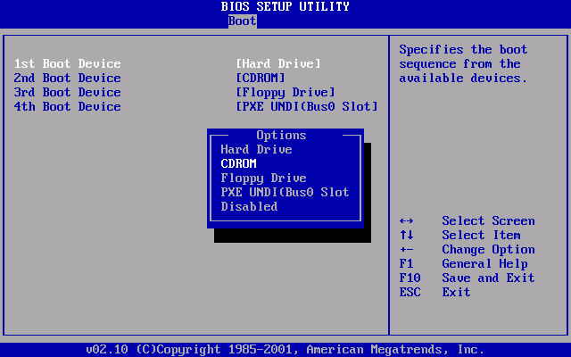
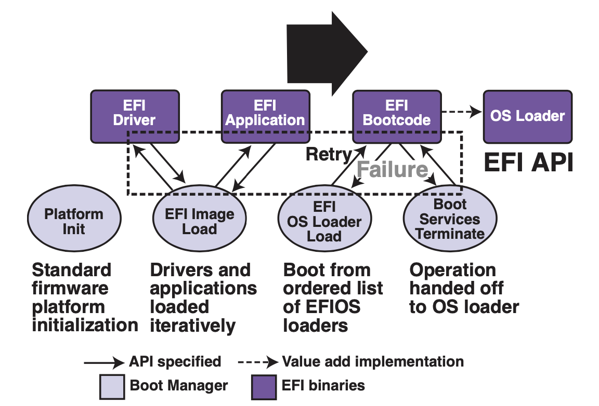

硬件视角的操作系统
操作系统有三条主线：“软件 (应用)”、“硬件 (计算机)”、“操作系统 (软件直接访问硬件带来麻烦太多而引入的中间件)”。第二章讲解操作系统上的应用程序的本质 (状态机)。而程序最终是运行在计算机硬件上的，本章讲解什么是计算机硬件，以及如何为计算机硬件编程。
本讲内容：计算机硬件的状态机模型；回答以下问题：
- 什么是计算机硬件？
- 计算机硬件和程序员之间是如何约定的？
- 听说操作系统也是程序。那到底是鸡生蛋还是蛋生鸡？
回顾：计算机硬件
计算机硬件 = 数字电路
计算机硬件 = 数字电路，数字电路模拟器 (Logisim代码模拟输出0,1,2)，实现思路：
- 基本构件：
wire, reg, NAND - 每一个时钟周期
- 先计算 wire 的值
- 在周期结束时把值锁存至 reg
“模拟” 的意义
- 程序是 “严格的数学对象”
- 实现模拟器意味着 “完全掌握系统行为”
计算机硬件的状态机模型
不仅是程序，整个计算机系统也是一个状态机
- 状态：内存和寄存器数值
- 初始状态：手册规定 (CPU Reset)
- 状态迁移
- 任意选择一个处理器 cpu
- 响应处理器外部中断
- 从
cpu.PC取指令执行
到底谁定义了状态机的行为？
- 我们如何控制 “什么程序运行”？
硬件与程序员的约定
Bare-metal 与程序员的约定
Bare-metal 与厂商的约定：
- CPU Reset 后的状态 (即寄存器值，包括 PC)
- 厂商自由处理这个地址上的值（在 PC 的位置，写入代码，CPU取指令译码执行）
- Memory-mapped I/O
厂商（主板/CPU） 为操作系统开发者提供 Firmware（驱动和固件）
- 管理硬件和系统配置
- 把存储设备上的代码加载到内存，并且跳转到它的某个地址开始执行。
- 例如存储介质上的第二级 loader (加载器)
- 或者直接加载操作系统 (嵌入式系统)
x86 Family: CPU Reset
- Intel® 64 and IA-32 Architectures Software Developer’s Manual, Volume 3A/3B 的规定
寄存器会有确定的初始状态
EIP = 0x0000fff0CR0 = 0x60000010- 处理器处于 16-bit 模式
EFLAGS = 0x00000002- Interrupt disabled
TFM (5,000 页+)
- 最需要的 Volume 3A 只有 ~400 页 (我们更需要 AI)
其他平台上的 CPU Reset
Reset 后处理器都从固定地址 (Reset Vector) 启动
- MIPS: 0xbfc00000
- Specification 规定
- ARM: 0x00000000
- Specification 规定
- 允许配置 Reset Vector Base Address Register
- RISC-V: Implementation defined
- 给厂商最大程度的自由
Firmware 负责加载操作系统
- 开发板（物理）：直接把加载器写入 ROM
- QEMU（模拟）：
-kernel可以绕过 Firmware 直接加载内核 (RTFM)
x86 CPU Reset 之后：到底执行了什么？
状态机 (初始状态) 开始执行
- 从 PC 取指令、译码、执行……
- 开始执行厂商 “安排好” 的 Firmware 代码
- x86 Reset Vector 是一条向 Firmware 跳转的 jmp 指令
Firmware的分类：BIOS vs. UEFI
- 一个小 “操作系统”
- 管理、配置硬件；加载操作系统
- Legacy BIOS (Basic I/O System)
- IBM PC 所有设备/BIOS 中断是有 specification 的 (成就了 “兼容机”)

- UEFI(Unified Extensible Firmware Interface)为什么需要 UEFI？
应对越来越多的硬件（指纹锁、USB 转接器上的 Linux-to-Go 优盘、山寨网卡上的 PXE 网络启动、USB 蓝牙转接器连接的蓝牙键盘）
- 各种驱动程序：设备都需要 “驱动程序” 才能访问；
- 解决BIOS逐渐碎片化的问题；

回到 Legacy BIOS: 约定
Legacy BIOS的约定，提供机制，将程序员的代码载入内存
-
Legacy BIOS 把第一个可引导设备（A盘、B盘、C盘等）的第一个 512 字节加载到物理内存的
7c00位置 -
此时处理器处于 16-bit 模式
-
规定
CS:IP = 0x7c00,(R[CS] << 4) | R[IP] == 0x7c00-
可能性1：
CS = 0x07c0, IP = 0 -
可能性2：
CS = 0, IP = 0x7c00
-
-
其他没有任何约束
MBR(master boot record) 的 512字节，虽然最多只有 446 字节代码 (64B 分区表 + 2B 标识（0x55 0xAA）)
- 但控制权已经回到程序员手中了！你甚至可以让 ChatGPT 给你写一个 Hello World
能不能看一下代码？
有没有可能我们真的去看从 CPU Reset 以后每一条指令的执行？
课堂代码：写一段 BIOS 程序，打印字符串，qemu 运行它并通过 gdb 调试
- MBR 是由 Firmware 加载：检查 CPU Reset 时整个计算机系统的状态，发现 0x7c00 位置并没有出现 MBR 的内容；
计算机系统公理：你想到的就一定有人做到
- 模拟方案：QEMU
- 传奇黑客、天才程序员 Fabrice Bellard 的杰作
- QEMU, A fast and portable dynamic translator (USENIX ATC'05)
- Android Virtual Device, VirtualBox, ... 背后都是 QEMU
- 真机方案：JTAG (Joint Test Action Group) debugger
- 一系列 (物理) 调试寄存器，可以实现 gdb 接口 (!!!)
小插曲：Hacking Firmware (1998)
Firmware 通常是只读的 (当然……)
- Intel 430TX (Pentium) 芯片组允许写入 Flash ROM
- 只要向 Flash BIOS 写入特定序列，Flash ROM 就变为可写
- 留给 Firmware 更新的通道
- 要得到这个序列其实并不困难
- 似乎文档里就有 🤔 Boom……
CIH 病毒的作者陈盈豪被逮捕，但并未被定罪

UEFI 上的操作系统加载
标准化的加载流程
- 磁盘必须按
GPT (GUID Partition Table)方式格式化 - 预留一个 FAT32 分区 (
lsblk/fdisk可以看到) - Firmware 能够加载任意大小的 PE 可执行文件
.efi - 没有 legacy boot 512 字节限制
- EFI 应用可以返回 firmware
更好的程序支持
- 设备驱动框架
- 更多的功能，例如 Secure Boot，只能启动 “信任” 的操作系统
实现最小操作系统
我们已经获得的能力
为硬件直接编程
- 可以让机器运行任意不超过 510 字节的指令序列
- 编写任何指令序列 (状态机)
- 只要能问出问题，就可以 RTFM/STFW/ChatGPT 找到答案
- “如何在汇编里生成 n 个字节的 0”
- “如何在 x86 16-bit mode 打印字符”
操作系统：就一个 C 程序
- 用 510 字节的指令完成磁盘 → 内存的加载
- 初始化 C 程序的执行环境
- 操作系统就开始运行了！
Bare-metal 上的 C 代码
为了让下列程序能够 “运行起来”：
需要准备
- MBR 上的 “启动加载器” (Boot Loader)
- 通过编译器控制 C 程序的行为
- 静态链接/PIC (位置无关代码)
- Freestanding (不使用任何标准库)
- 自己手工实现库函数 (putch, printf, ...)
AbstractMachine Repo
课程提供的运行 C 程序的框架代码和库，针对裸机上的 C 语言运行环境。
提供 5 组 (15 个) 主要 API，可以实现各类系统软件 (如操作系统)：
- (TRM)
putch/halt- 最基础的计算、显示和停机 - (IOE)
ioe_read/ioe_write- I/O 设备管理 - (CTE)
ienabled/iset/yield/kcontext- 中断和异常 - (VME)
protect/unprotect/map/ucontext- 虚存管理 - (MPE)
cpu_count/cpu_current/atomic_xchg- 多处理器